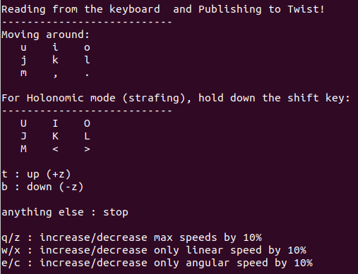

Controlling the simulated robot on RViz¶
Setup¶
Install teleop twist keyboard
sudo apt update sudo apt install ros-melodic-teleop-twist-keyboard
From your Android device, go to Google Play Store and install the ROS Control app.
Start the driver
roslaunch robotont_driver fake_driver.launch
Make sure that fixed frame is set to “odom”!
Controlling the robot using teleop twist keyboard¶
Open a new terminal window
Run the following command:
rosrun teleop_twist_keyboard teleop_twist_keyboard.py
Use the following keys to move the robot:
Hint
Notice that the teleop node only receives keypresses only when the terminal window is active.
Tip
Use
CTRL + Cto stop the node.
{kind=link}
Controlling the robot using an Android device¶
Open the ROS Control app on your phone
Insert your computer’s IP address into Master URI field by entering the following:
http://IP_address:11311
Click on “Show advanced options” in the prompted window and fill in “Joystick” and “Odometry” topic names with “cmd_vel” and “odom”, respectively
Click OK to add the robot
Now you can select the robot from the list and teleoperate it using the touch joystick button